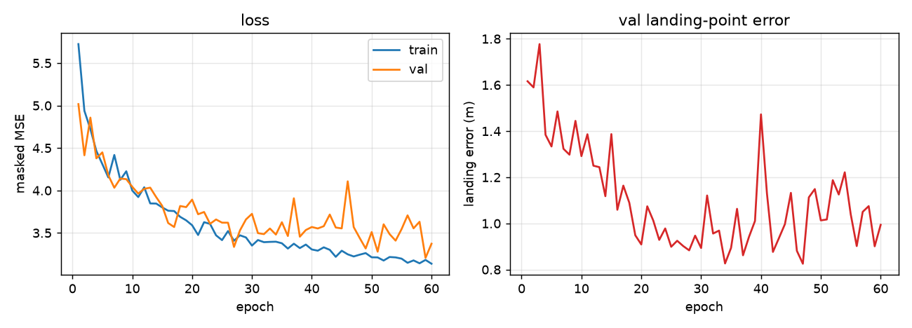
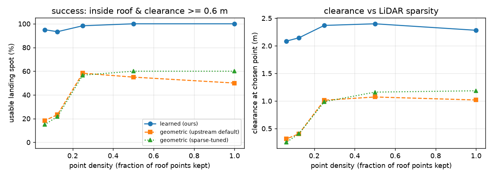
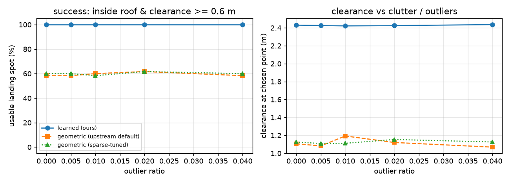
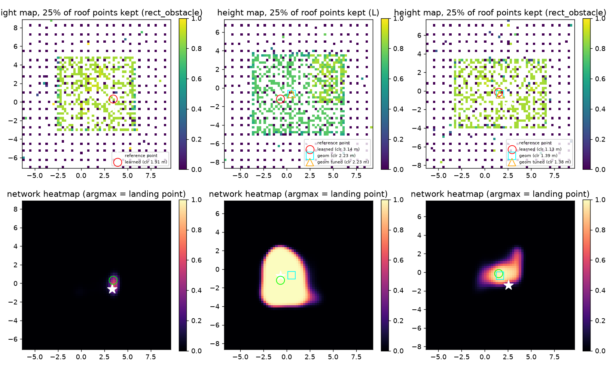
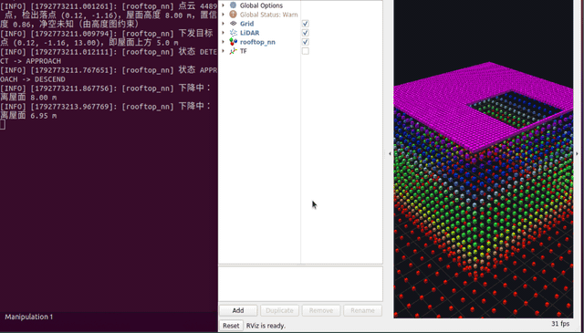
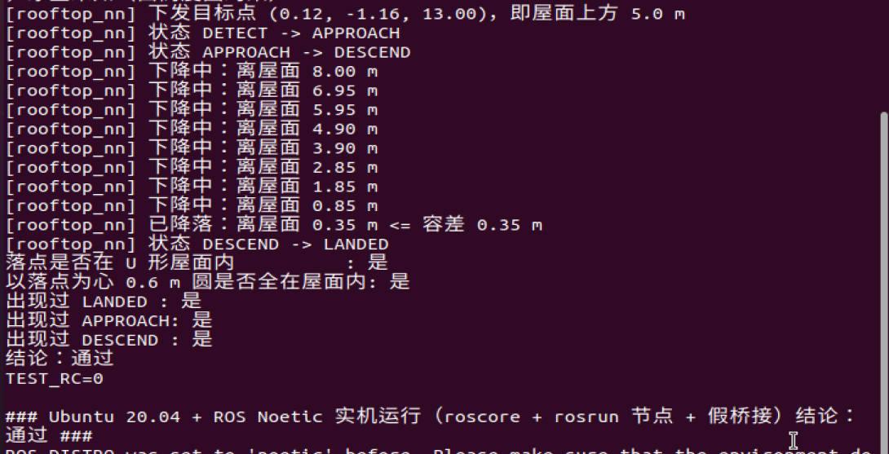
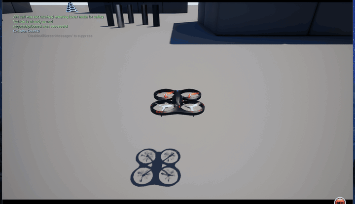

无人机屋顶降落（学习型落点选择）
本模块把屋顶落点选择做成一个学习问题：机载 LiDAR 点云先栅格化成「高度图」， 再用一个小卷积网络在图上回归「最安全的落点」，最后复用桥接层的目标点 / 速度通道 完成飞抵与垂直降落。
和已有的 无人机屋顶降落（RANSAC 平面 + 凸包 + polylabel 最大内切圆） 是同一个选题的两条技术路线，本页重点回答一个问题：
在凹形屋顶、稀疏点云、杂波这些真实退化条件下，几何法与学习法谁更稳？
1. 为什么要换成学习的方式
几何法的落点来自「屋顶点云的凸包 → 最大内切圆圆心」。这条链在两处会失效：
- 凹形屋顶：U 形、L 形、带天井的楼，凸包会把缺口填平，内切圆圆心会落到缺口上方（空中）。
- 稀疏点云：点云一稀，连通域会被拆成几块，凸包随之变形，落点漂移甚至跑到屋面外。
学习法不显式求凸包，而是直接从「哪里有平屋顶、离边界多远、有没有障碍」的栅格证据里学落点， 因此对这两类退化更鲁棒。
2. 方法
/lidar/points ──► ROI 裁剪 ──► 高度图(64x64x3) ──► CNN ──► 热力图 ──► argmax + 亚格精化
│ │
└─ 通道: [归一化高度, 有效掩码, 粗糙度] ▼
落点 (x, y) + 屋面高度 z
│
/rooftop_nn/landing_point ◄──┤
/uav/goal (屋面上方 5 m) ◄───┤
/uav/cmd_vel (垂直下降) ◄───┘
- 高度图：16 m × 16 m 的 ROI 栅格化成 64 × 64，三通道
- 归一化高度：每格最高点相对「参考面」（点云 10% 分位数带的均值）的高度， 尺度用 98% 分位数的 1.15 倍现算，因此对不同屋顶高度尺度无关；
- 有效掩码：该格有没有点；
- 粗糙度：每格 (max z − min z)，用于区分「平屋面」与「立面（墙）」—— 墙脚那一列的高度和屋面一样高，只有粗糙度能区分。
- 网络：三级下采样 + 三级上采样的小 CNN（约 5 万参数，权重的 npz 约 200 KB）。 感受野要覆盖整个 16 m ROI，网络才能比较「屋顶中心」与「屋顶边缘」的净空； 早期版本只用两级下采样（感受野不到 5 m），落点误差在 4~6 m 量级。
- 落点提取：热力图 argmax + 3×3 加权质心做亚格精化，再叠两条物理硬约束：
min_height_m（不许落到地面）与rough_max（不许贴着墙下落）。约束按 「高度+平坦 → 高度 → 掩码」依次退让，保证任何情况下都有解。 - 部署零依赖：权重导出成
models/landing_cnn.npz，numpy 前向在scripts/landing_cnn.py里逐层复刻，客户机不需要装 torch（只需 numpy）， 与rooftop_landing的「无重型依赖」原则一致。 训练结束后脚本会自动做 numpy / torch 的逐元素对齐检查，argmax 一致率 100%。
3. 训练数据与真值
真实仿真器里没有「完美落点」的标注，因此按几何定义造数据（tools/scene_dataset.py）：
- 场景：矩形 / L 形 / U 形 / 带天井 / 双楼相邻 / 屋面有空调外机，共 6 类；
- 点云退化：屋顶保留比例 5%~100%、离群点 0~3%、测距噪声 0.5~5 cm、 另含地面、立面回波（贴近真实 LiDAR）；
- 真值：理想几何上的「最大净空连通域中心」（等价于 polylabel 想逼近的最大内切圆圆心）。

4. 对比实验：学习法 vs 几何法
同一批场景、同一份 ROI 内点云，比较三条路线：
learned：本模块；geometric (default)：rooftop_landing的默认参数（面向稠密点云）；geometric (sparse-tuned)：按上游 README 建议放宽参数（cluster_min_points=1等）， 避免「拿差参数踩对手」。
主指标是落点处的净空（该点到屋面边界的距离，来自理想几何，与选点无关）以及
「可用落点率」= 落在屋面内 且 净空 ≥ 0.6 m（与上游 select_landing_target 的
min_radius 安全常数一致）。不直接用「与某个真值点的距离」：细长屋顶的
「离边界最远的点」本身就是一整条中轴，任何中轴上的点同样安全。
4.1 点云稀疏度
| 屋顶保留比例 | 学习法 可用落点率 / 平均净空 | 几何法(默认) | 几何法(调参) |
|---|---|---|---|
| 100% | 100% / 2.28 m | 50% / 1.02 m | 60% / 1.18 m |
| 50% | 100% / 2.40 m | 55% / 1.07 m | 60% / 1.16 m |
| 25% | 98% / 2.37 m | 58% / 1.01 m | 57% / 0.99 m |
| 12.5% | 93% / 2.15 m | 23% / 0.41 m | 22% / 0.41 m |
| 6.25% | 95% / 2.09 m | 18% / 0.31 m | 15% / 0.25 m |

4.2 杂波 / 离群点
离群点比例 0% → 4%，学习法可用落点率始终 100%、平均净空 2.42~2.44 m； 几何法 58%~62%、净空 1.07~1.19 m。

4.3 分形状（点云保留 35%，离群点 1%）
| 屋顶形状 | 学习法 | 几何法(默认) | 说明 |
|---|---|---|---|
矩形 rect |
100% / 3.14 m | 100% / 3.29 m | 规则屋顶上两者都很好（不夸大） |
L 形 L |
100% / 2.49 m | 60% / 1.11 m | 凸包把缺口填平 |
U 形 U |
100% / 2.66 m | 67% / 0.79 m | 同上 |
带天井 courtyard |
100% / 1.97 m | 0% / 0.00 m | 凸包把天井填平，落点落到天井里 |
双楼 twin |
100% / 2.44 m | 67% / 1.78 m | 连通域被拆开的取舍 |
有障碍物 rect_obstacle |
100% / 2.05 m | 75% / 1.08 m | 障碍物顶面被当成候选面 |

结论要如实说：规则矩形屋顶上几何法已经很准，学习法的价值体现在凹形屋顶 （凸包结构性失效）、稀疏点云（凸包被拆碎）和有障碍物的屋面这三类情况。
5. 运行
5.1 依赖
# 客户机（Ubuntu 20.04 + ROS Noetic）
sudo apt install -y python3-numpy # 唯一需要额外装的 Python 依赖
前置的仿真器启动、桥接层编译与连接见 无人机与 ROS 的桥接模块。
5.2 编译
cd ~/uav_ws/src
cp -r <本包> air/ # 目录结构为 src/air/rooftop_landing_nn
cd ~/uav_ws && catkin_make
source devel/setup.bash
5.3 启动
# 终端 1：桥接层（另见 carlair_ros_bridge 文档）
roslaunch carlair_ros_bridge main.launch host:=<仿真器地址>
# 终端 2：本模块
roslaunch rooftop_landing_nn main.launch
节点会依次输出：
[rooftop_nn] 已启动，状态 DETECT，模型 landing_cnn.npz（64 格 / 16.0 m ROI）
[rooftop_nn] 点云 8082 点，检出落点 (18.42, -3.17)，屋面高度 13.85 m，置信度 1.00
[rooftop_nn] 下发目标点 (18.42, -3.17, -18.85)，即屋面上方 5.0 m
[rooftop_nn] 状态 DETECT -> APPROACH
[rooftop_nn] 状态 APPROACH -> DESCEND
[rooftop_nn] 下降中：离屋面 3.42 m
[rooftop_nn] 已降落：离屋面 0.31 m <= 容差 0.35 m
[rooftop_nn] 状态 DESCEND -> LANDED
rosrun rooftop_landing_nn main.py 等价（前台直接跑），
roslaunch rooftop_landing_nn main.launch use_rviz:=false 不开 RViz。
5.4 常用参数
| 参数 | 默认 | 说明 |
|---|---|---|
perception/cells |
64 | 高度图边长（格），与模型 meta 一致 |
perception/size_m |
16.0 | ROI 边长 (m) |
perception/accumulate_frames |
3 | 累积几帧点云再推理（点云稀疏时调大） |
perception/min_height_m |
1.0 | 落点高出参考面的下限 (m) |
perception/rough_max |
0.35 | 落点允许的最大粗糙度；-1 关闭 |
perception/roi_center |
uav |
ROI 中心取无人机位置或点云中心 |
approach/safe_altitude |
5.0 | 过渡目标点在屋面上方的高度 (m) |
descend/speed |
0.5 | 垂直下降速度 (m/s) |
descend/tolerance |
0.35 | 判定触地的高度容差 (m) |
frame/z_up |
true |
高度是否上为正（carlair_ros_bridge 为 ENU） |
5.5 话题
| 方向 | 话题 | 类型 | 说明 |
|---|---|---|---|
| 订阅 | /lidar/points |
sensor_msgs/PointCloud2 |
世界系点云 |
| 订阅 | /uav/odom |
nav_msgs/Odometry |
位姿 |
| 订阅 | /uav/status |
std_msgs/String |
GOAL_DONE <x> <y> <z> |
| 发布 | /uav/goal |
geometry_msgs/Point |
屋面上方的目标点 |
| 发布 | /uav/cmd_vel |
geometry_msgs/Twist |
下降阶段的垂直速度 |
| 发布 | /rooftop_nn/landing_point |
geometry_msgs/Point |
选中的落点（z = 屋面高度） |
| 发布 | /rooftop_nn/markers |
visualization_msgs/MarkerArray |
落点与 ROI 可视化 |
6. 测试
6.1 本地回归测试（无需 ROS / 仿真器 / GPU / torch）
python3 tests/test_rooftop_landing_nn_local.py
覆盖高度图栅格化、基础算子与朴素实现的一致性、权重文件自洽性、 两条硬约束的退让顺序，以及用仓库里那份真实权重的端到端合成场景回归。 预期结尾：
结果：46/46 通过
6.2 闭环冒烟测试（假桥接层，不含仿真器）
tests/test_rooftop_landing_nn_ros_sim.py 自带一个假桥接层：按 20 Hz 发 /uav/odom、
按 10 Hz 发一帧 U 形屋顶（10×10 m 挖掉 4×5 m 缺口，z=8 m）+ 地面 + 立面的点云，
收到 /uav/goal 后瞬移到目标点上方并回报 GOAL_DONE <x> <y> <z>，
把 /uav/cmd_vel.linear.z 积分进高度 —— 于是整条链路能真的从 16 m 一层层降到屋面。
# 终端 1
roslaunch rooftop_landing_nn main.launch use_rviz:=false
# 终端 2
python3 tests/test_rooftop_landing_nn_ros_sim.py
测试最后会自己核对：落点在 U 形屋面内、且以落点为心 0.6 m 的圆完全在屋面内 （几何法在这张图上会把落点选到缺口上方）。
该测试已在 Ubuntu 20.04 + ROS Noetic 实机跑通（roscore + rosrun 起节点，
再跑测试脚本），状态机完整走到最后一步。下面是这次运行的真实录屏（左：节点实时日志；
右：RViz 里 /lidar/points 的 U 形屋面点云与 /rooftop_nn/markers 的落点球 + ROI 框）：


[rooftop_nn] 下发目标点 (0.12, -1.16, 13.00)，即屋面上方 5.0 m
[rooftop_nn] 状态 DETECT -> APPROACH
[rooftop_nn] 状态 APPROACH -> DESCEND
[rooftop_nn] 已降落：离屋面 0.35 m <= 容差 0.35 m
[rooftop_nn] 状态 DESCEND -> LANDED
落点是否在 U 形屋面内 : 是
以落点为心 0.6 m 圆是否全在屋面内: 是
结论：通过
6.3 真实仿真器（UE 5.5 + Cosys-AirSim）实测：一次完整降落
宿主 Windows 上跑 UE 5.5 + Cosys-AirSim（Blocks 场景，雷达改成 32 线 / 60 m），
同一台机器上跑 carlair_ros_bridge + 本模块（ROS Noetic 用 conda 环境即可，不需要虚拟机）。
一次完整跑通的日志：
[rooftop_nn] 点云 24980 点，检出落点 (10.99, 14.52)，屋面高度 15.83 m，置信度 1.00
[rooftop_nn] 下发目标点 (10.99, 14.52, 20.83)，即屋面上方 5.0 m
[rooftop_nn] 状态 DETECT -> APPROACH
[rooftop_nn] 状态 APPROACH -> DESCEND
[rooftop_nn] 下降中：离屋面 4.66 m / 3.68 m / 2.61 m / 1.55 m / 0.55 m
[rooftop_nn] 已降落：离屋面 0.35 m <= 容差 0.35 m
[rooftop_nn] 状态 DESCEND -> LANDED

（橙色球就是模块算出的落点标记，飞机飞到它上方再垂直下降。）
关键坑：桥接层的 control/cmd_duration 必须给到 0.3~0.5 s。
cmd_vel_sub 把每条速度指令调成 moveByVelocityBodyFrameAsync(..., duration=cmd_duration)，
默认 0.1 s。策略侧 10 Hz 下发时，下一条命令会在上一条生效前把它顶掉，飞机几乎不动。实测（同一架飞机、
同一条 0.5 m/s 下降指令，各跑 4 s）：
| 下发方式 | 4 s 实际下降 | 期望 |
|---|---|---|
10 Hz × duration=0.1（默认） |
+0.11 m | +2.0 m |
3.3 Hz × duration=0.3 |
+0.28 m | +2.0 m |
10 Hz × duration=0.5 |
+2.27 m | +2.0 m |
所以跑真机前先 rosparam set /control/cmd_duration 0.5 再起桥接层（本模块不用改）。
另一个环境坑：Windows 上 roslaunch 解析含中文注释的 config/*.yaml 会走 GBK 解码失败，
需要给进程加 PYTHONUTF8=1。
7. 已知限制
- 学习法需要训练数据；本模块的真值来自合成几何，迁移到完全不同风格的城市地图时
应当重新采样训练（
tools/train_landing_cnn.py一条命令即可，RTX 5060 上约 4 分钟）。 - 高度图取每格最高点，对悬挑结构（雨棚、广告牌）会偏保守；
rough_max能挡掉大部分 立面误判，但极端场景仍需靠min_height_m调参。 - 已在真实 UE + AirSim 上跑通一次完整降落（检出落点 → 飞抵 → 垂直下降 → LANDED，见 6.3），
但下降速度通道依赖桥接层的设置：
control/cmd_duration默认 0.1 s 时飞机几乎不动 （实测 4 s 只降 0.11 m），必须先设成 0.3~0.5 s。这是carlair_ros_bridge的下发方式决定的， 不是本模块的问题；模块与rooftop_landing共用同一套桥接话题 （/uav/odom、/lidar/points、/uav/goal、/uav/cmd_vel、/uav/status）。
附：大模型使用声明
本模块的代码、训练脚本、对比实验与文档在编写过程中使用了 AI 大模型辅助
（方案讨论、代码与文档起草、实验脚本整理）。全部结论均来自本仓库内可复现的运行结果：
tests/test_rooftop_landing_nn_local.py（46 项本地断言）、
tests/test_rooftop_landing_nn_ros_sim.py（Ubuntu 20.04 + ROS Noetic 实机闭环，
见 6.2）、
tools/eval_landing_nn.py（三组消融实验，CSV 与图见 src/air/rooftop_landing_nn/results/
与 docs/img/air/rooftop_landing_nn/）。作者对提交内容的正确性与完整性负全部责任。